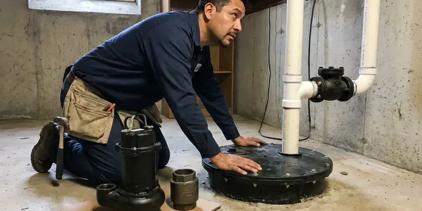

Water Line Installation in Stamford, CT
From main service lines to interior plumbing, GLV Plumbing offers professional water line installation across Stamford, CT.
- Licensed and Insured Plumbers
- Trenching Through Rock and Clay
- Guaranteed Workmanship
- Guaranteed Work
Need a New Water Line Installed in Stamford, CT?
Request a free estimate today for your water line installation project from GLV Plumbing.
Professional Water Line Installation in Stamford, CT
GLV Plumbing understands that soil can be tough on buried pipe, from rocky fill that scrapes and dents to expansive clay that shifts as it wets and dries. High water tables in low-lying areas of Connecticut can push groundwater into basements during wet seasons and strain sump pumps. We choose pipe material and bedding that fit your lot, upsize the line when your fixture count calls for it and leave the yard graded and clean.
Our expertise includes:
- Compliance with Local Connecticut Plumbing Codes
- Sizing and routing for optimal water pressure
- Trenching, boring and rock breaking with proper sand bedding

Additional Plumbing Installation Services in Stamford, CT
We install water heaters, pumps, lines, and fixtures across Stamford, CT with careful, permitted work that passes inspection the first time.


Customers
Why Choose GLV Plumbing for Water Line Installation in Stamford, CT?
Our experience with local soil conditions and Connecticut building codes means your water line installation is done right the first time, providing peace of mind.
- Clean Installation, Our team works efficiently and leaves your property as clean as we found it, minimizing disruption to your daily routine.
- Local Expertise, Our plumbers are familiar with local plumbing codes and the typical soil conditions in Stamford, which can affect water line durability.
- Clean Restoration, We backfill, compact and regrade the trench so your yard looks like it did before.
Citywide Coverage
GLV Plumbing serves every neighborhood in Stamford, CT, so no matter where you are located, our professional water line installation services are available. We are your local plumbing partner, committed to timely and efficient service across the entire area.
Experienced Team
Our plumbing team at GLV Plumbing has wide experience with all types of water line installations, both new construction and replacements. They are trained on the latest techniques and equipment for efficient and reliable work.
Safety-First Approach
We make sure every installation is not only functional but also safe and fully compliant with local safety regulations and plumbing codes, preventing hazards like backflow contamination or pipe bursts.
Trusted Certified Stamford Plumbing Services Professionals
At GLV Plumbing, we take pride in providing certified plumbing services throughout Stamford, CT. Backed by leading industry credentials, our experienced plumbers combine technical skill with genuine customer care. Whether it is repair, installation, or maintenance, we follow strict safety and quality standards to deliver lasting results you can trust.
Call Us Now PHCC Plumbing Contractor Recognition
PHCC Plumbing Contractor Recognition Better Business Bureau (BBB) Accreditation
Better Business Bureau (BBB) Accreditation Angi Certified Pro
Angi Certified Pro ISO 9001 Quality Management Certification
ISO 9001 Quality Management CertificationDurable Water Line Installation Services in Stamford, CT
New Construction Water Line Installation in Stamford, CT
Building a new home or commercial property in Stamford? Our team works closely with builders and homeowners to design and install a complete water line system. This includes the main service line, interior distribution lines and connections for all fixtures and appliances. We ensure every installation meets future demand and current codes and provides steady water pressure throughout the property.

Water Line Upgrades & Relocation in Stamford, CT
In some cases, home renovations or landscaping projects require existing water lines to be upgraded or relocated. GLV Plumbing provides professional services for modifying your current water line in Stamford, CT. Whether you need to move a line for a new addition or upgrade to a larger diameter pipe for better water pressure, our plumbers do the work safely and to code, tying it in cleanly with your home's system.
Main Water Line Replacement in Stamford
Over time, main water lines can corrode, crack or leak because of shifting soil, tree root intrusion or age. GLV Plumbing focuses on replacing old, failing main water lines, often upgrading from galvanized steel or polybutylene to more durable PEX or copper. We handle the excavation, pipe laying and connection to your home and the public water supply, with minimal disruption and lasting performance. Our team in Stamford is familiar with local soil types and infrastructure.
Insulating Water Lines for Connecticut Weather in Stamford, CT
Frozen pipes are a regular winter risk in Connecticut, especially lines in exterior walls, crawlspaces, and unheated porches or garages. Even where winters are mild, a hard freeze can still pose a risk to exposed water lines. GLV Plumbing offers water line installation with proper insulation, especially for lines running through unheated spaces or near exterior walls in Stamford, CT. This proactive step helps protect your pipes from freezing and bursting, safeguarding your home against costly water damage during cold snaps. We recommend insulation materials based on local conditions.
Water Line Replacement for Older Homes in Stamford
Many homes in Connecticut use oil or gas boilers with baseboard or radiator heat, so plumbers here often work on hydronic systems too. Many older homes still have galvanized steel or aging copper pipes that are prone to corrosion, leaks and reduced water pressure. GLV Plumbing provides professional water line replacement in Stamford, upgrading your system to modern, durable materials like PEX or new copper. This boosts water quality and pressure and prevents costly future repairs caused by failing pipes.
Emergency Water Line Repair & Installation in Stamford
A burst or badly leaking water line can cause significant damage and disrupt your daily life. GLV Plumbing offers emergency water line repair and installation in Stamford when immediate action is needed. Our team is ready to quickly diagnose the issue, isolate the problem and perform the repairs or full replacement needed to restore your water service fast and limit property damage.
Trenchless Water Line Installation in Stamford
When appropriate, GLV Plumbing offers trenchless water line installation, which can replace your main water line with minimal digging. This technique, often using pipe bursting, can save your landscaping and reduce restoration costs. It is an efficient option for properties in Stamford where traditional excavation would be overly disruptive or costly.

Commercial Water Line Services in Stamford, CT
Commercial properties in Stamford have specific demands for water line installation, often requiring larger diameters and more complex routing. GLV Plumbing has the expertise and equipment to handle commercial water line projects, from restaurants to office buildings. We understand the importance of minimal downtime and make sure all work meets commercial building codes and operational needs.
Water Line Installation Near Me in Stamford, CT
Our team is always prepared to respond quickly to your water line needs, so residents throughout Stamford have access to expert, dependable plumbing services right in their neighborhood. Don't hesitate to call (860) 487-7330 for assistance.
When you need water line installation near me and want it done before the next billing cycle shows another leak, contact our local team. We schedule utility locates right away and can often start digging within a few days. Emergency situations get priority scheduling.
GLV Plumbing at a Glance
- Fully licensed plumbing team covering Stamford, CT
- 24/7 emergency service with same-day scheduling
- Clear written estimates, no hidden fees
- 4.8-star rated by 946+ Connecticut customers
Stamford Map
Stamford Information
- Population
- 136,226
- Area codes
- 203/475/914
- Service area
- Stamford and communities within 40 miles
- Nearby
- Norwalk, Bridgeport, Danbury, Milford
Soil conditions vary from lot to lot, so proper water line installation and material selection are crucial for preventing future leaks and keeping homes in Stamford, CT reliably supplied.
Expert Services
Trust our professionals for reliable GLV Plumbing solutions in Stamford, CT.
Our Specialized Plumbing Services in Stamford, CT
At GLV Plumbing, we provide a complete range of plumbing services across Stamford, CT. From leak detection to full system installations, our team ensures fast, precise, and affordable service for both residential and commercial properties. Explore our core services below:


How Our Water Line Installation Process Works in Stamford, CT
Here is how we take a water line project from estimate to a finished, restored yard.
Request a Quote
Start by calling (860) 487-7330 to schedule an on-site consultation. Our team will assess your current plumbing, discuss your needs and provide a detailed, transparent quote.
Site Assessment
We conduct a thorough inspection of your property, identifying the best route for your new water line and checking for underground utilities. This planning heads off surprises.
Permitting & Prep
GLV Plumbing handles all necessary permits for water line installation in Stamford. We prepare the site by safely excavating trenches where required, following all safety standards.
Frequently Asked Questions About Water Line Installation in Stamford
The cost of water line installation in Stamford, CT varies widely depending on pipe material, PEX or copper, the length of the line, excavation depth and site access. A basic main water line replacement can range from $2,500 to $8,000, while new construction installations might be part of a larger plumbing package. We provide a detailed estimate after a site assessment.
Trenching does disturb a narrow path, but we backfill, compact and regrade when we finish. If the route crosses concrete or mature landscaping, we can talk through trenchless options.
PEX is flexible, less expensive, resistant to freezing and corrosion, and has fewer fittings, which means fewer potential leak points. Copper is rigid, more expensive, has a proven track record, is naturally antimicrobial and can withstand higher temperatures. Both are solid choices, and the best option depends on your budget, property needs and local water conditions in Stamford.
A typical residential water line takes one to two days, plus time for utility locates and inspection. Rocky ground or long runs can tack on a day or two.
Pipe manufacturers offer long warranties on PEX and HDPE, and copper has a long track record. We also warranty our installation labor and will review the specific terms with you before work starts.
Some homeowners dig their own trench, but connecting to the meter, sizing the pipe and passing inspection are best handled by a licensed plumber. A poor joint underground can leak for months before anyone notices.
High water tables in low-lying areas of Connecticut can push groundwater into basements during wet seasons and strain sump pumps. Soil that shifts and settles puts stress on underground pipes. This is why flexible materials like PEX are often recommended, and why proper bedding and backfill during installation are crucial to prevent pipe damage from ground movement.
Type K copper, PEX and HDPE are all approved choices. HDPE and PEX flex with soil movement and have fewer joints, while copper offers rigidity and puncture resistance.
What People Are Saying About Our Plumbing Experts?

Mark T.
When our office needed drain cleaning, GLV Plumbing provided quick, reliable service. The plumber arrived on time and made sure every drain flowed perfectly before leaving. Very satisfied.
Drain Cleaning · New Haven, CT
James P.
Our commercial plumbing system had a leak under the sink, and GLV Plumbing handled it professionally. The plumbers arrived quickly and restored everything without disruption to our customers.
Commercial Plumbing · Norwalk, CT
Laura S.
I scheduled a water heater replacement, and the team made the process smooth and affordable. The new unit works perfectly, and they cleaned up after completing the job.
Water Heater Replacement · Norwalk, CT
Patricia H.
We had a slab leak that two other companies could not find. GLV Plumbing located it in under an hour, explained our options, and the price matched the quote to the dollar.
Slab Leak Repair · Milford, CT
Daniel K.
A pipe burst at 11 pm and they actually answered. The plumber showed up within the hour, shut everything down, and had us back to normal the next morning. Could not ask for more.
Emergency Plumbing · Norwalk, CTSofia M.
Two new toilets installed in one visit, no mess left behind, and the tech even adjusted a faucet he noticed was dripping. Fair pricing and really friendly.
Toilet Installation · Bridgeport, CT